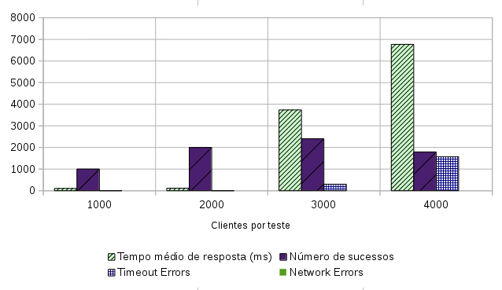
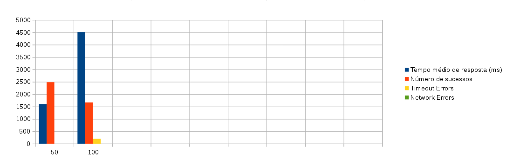
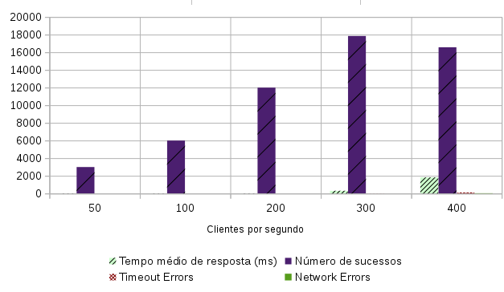
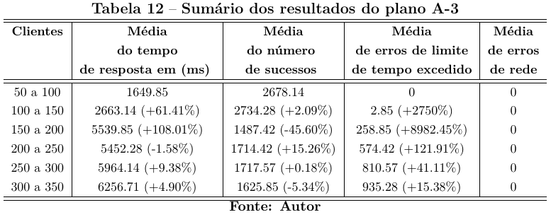
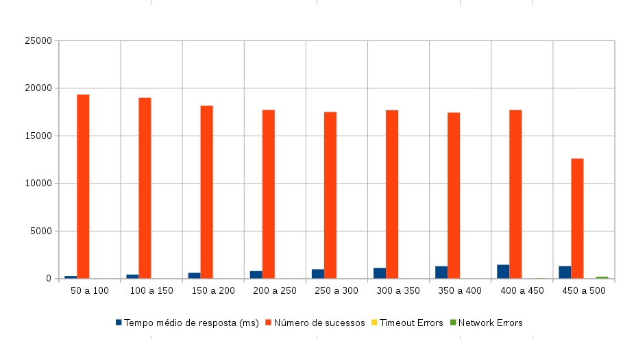
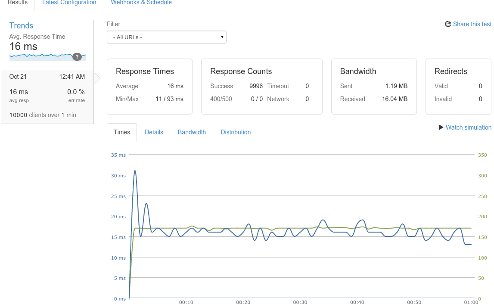
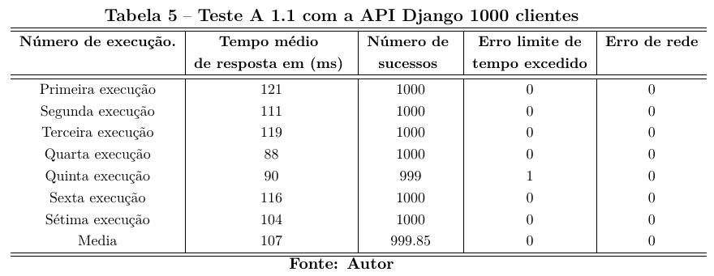
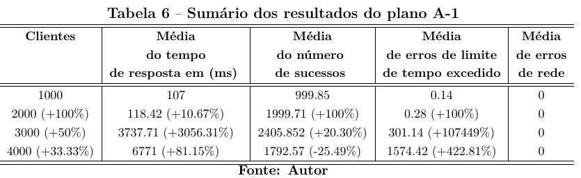
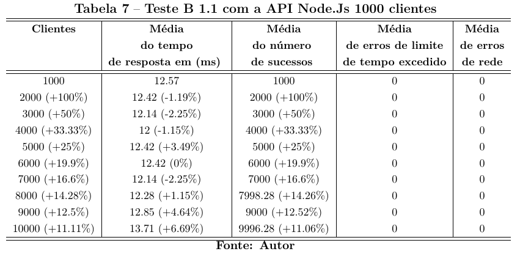
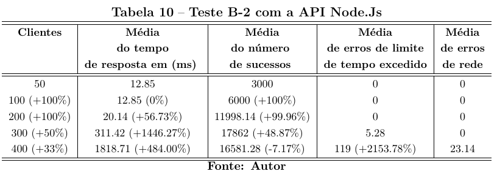

Utilizando JavaScript no servidor para construir aplicações de alta concorrência na internet com Node.Js
Aluno: Lucas Simon Rodrigues Magalhães
Orientador: João Caram
Sistemas de Informação
Sumário
- Introdução
- Problema
- Objetivo
- Justificativas
- Metodologia
- O Node.Js
- Descrição dos Protótipos
- Ambiente de testes
- Análise de indicadores de Desempenho
- Conclusão
- Referências
Introdução
-
Node.Js
- Escrito em JavaScript
- Orientado a eventos não bloqueantes
- Server-side
- Eficiência e escalabilidade
- Criado por Ryan Dhal em 2009 (Node.js, 2014)
Problemas atuais
- Número de internautas de 2005 a 2011 cresceu 143.8%.
- Número de pessoas com celular, 107.2%. (IBGE, 2012)
- Java e PHP, alocam 2 MB de memória a cada thread (Abernethy, 2011)
- "As plataformas tradicionais são bloqueantes" (Pereira, 2013)
- Usuários, desempenho e escalabilidade
Objetivo
Investigar e comparar a capacidade do ambiente Node.Js de processar e responder melhor as requisições em relação a um aplicativo desenvolvido no paradigma tradicional.
Objetivo Específicos
- Ser um guia básico de instalação e configuração dos frameworks utilizados;
- Verificar o tempo médio de resposta;
- Verificar o número de sucessos obtidos;
- Quantificar o desempenho entre cada teste;
Justificativas
- Escalonamento horizontal e vertical
- Melhorar o desempenho das aplicações em nível de software
Metodologia
- Estudo do ambiente Node.Js
- Levantamento de requisitos de aplicação-teste
- Criar dois aplicativos em diferentes paradigmas e hospedá-los
Metodologia
-
Executar testes (loader.io)e comparar resultados
- Clientes por teste
- Clientes por segundo
- Mantendo a carga de clientes
O NODE.JS
Herda características do JavaScript
- Orientação a eventos
- Callback's ou chamadas de retorno
- Callbacks Hell
Thread única
- Nó de servidor de processos.
- Diferente dos sistemas tradicionais.
- Com a thread única é possível suportar um alto número de conexões. (TILKOV, 2010)
Ciclo de eventos
- Repetição infinita.
- Módulo EventEmitter.
- Sem bloqueios ou impasses.
- O único gargalo de um servidor Node.Js passa-se a ser a capacidade de tráfego da aplicação.(OLIVEIRA, 2012)
PROTÓTIPOS
Descrição
Desenvolvido em forma de API.
- Recurso chamado Pessoas.
- A API REST deverá prover estratégias para manipular as ações de CRUD de uma pessoa(s)
- Recurso chamado Contatos.
- A API REST deverá prover estratégias para manipular as ações de CRUD de um contato(s)
Framework Django
- Pacote Django Rest Framework
Sequência de desenvolvimento
- Cria-se as urls para cada recurso apontando para as classes lógicas
- As classes lógicas herdam das classes do Django Rest Framework
- Acessam o modelos e o ORM do Django realiza a consulta
- Serializa os dados que respondem para o usuário
Framework Express.Js
- Não utiliza ORM
Sequência de desenvolvimento
- Acesso as url são feitas pelo express.Route()
- Cada rota possui os métodos (get(),post()...) relacionados ao métodos HTTP
- Cada chamada de retorno da rota executa uma função do módulo pg para consulta SQL
- Cada chamada de retorno da consulta retorna os dados para o usuário em JSON
Ambiente de testes
Hospedagem
- VPS da DigitalOcean.
- Melhor custo benefício.
| Componente | Descrição |
|---|---|
| Memória Ram | 512 MegaBytes |
| Processador | 1 núcleo. |
| Espaço em disco | 20 GigaBytes |
| Transferência em rede | 1 TeraByte. |
Comparando os ambientes de cada protótipo
| |
|
|||
|---|---|---|---|---|
| Processo | Memória | Processo | Memória | |
| gunicorn | 104 MB | node | 22 MB | |
| Postgres | 19.3 MB | Postgres | 17.8 MB | |
| supervisord | 11.5 MB | pm2 | 17.4 MB | |
| nginx | 7.26 MB | nginx | 6.61 MB | |
O Loader.Io
- Simples serviço de teste de carga baseado em núvem que permite realizar um teste de estresse em seus aplicativos web ou API's com milhares de conexões simultâneas. (Sendgrid, 2014)
- Gratuito até 10000 clientes por 1 minuto de duração.
OS TESTES
- Os testes foram realizados utilizando a URI GET /api/v1/contatos
- Um teste foi executado 7 vezes originando a série do plano de teste.
- Retiramos a média do tempo de resposta, número de sucessos, erros de tempo de limite excedido e erros de rede.
- Sumarizamos os dados em uma nova tabela
- Aumento da carga de clientes nas opçoes do loader.io.
Análise de indicadores de Desempenho
Plano de teste A-1 e B-1 correspondem ao teste "cliente por teste" para Django (A) e Node.Js (B) respectivamente
Clientes por testes
Este teste permite que especifique um número total de clientes que se conectam ao serviço.
Especificando 20 mil clientes para a 20 segundos de teste, 1.000 clientes irão se conectar a cada segundo durante esse teste.
Clientes por teste Django

Clientes por teste Node.js

Análise de indicadores de Desempenho
Plano de teste A-2 e B-2 correspondem ao teste "Clientes por segundo" para Django (A) e Node.Js (B) respectivamente
Clientes por segundo
Este teste permite que especifique um número de clientes que se conectam a cada segundo.
Qual o desempenho do meu servidor quando cinco usuários se conectam a cada segundo ao longo de um período de 5 minutos?
Clientes por segundo Django

Clientes por segundo Node.js

Análise de indicadores de Desempenho
Plano de teste A-3 e B-3 correspondem ao teste "Mantendo carga de clientes" para Django (A) e Node.Js (B) respectivamente
Mantendo carga de clientes
Teste utilizado para sobrecarregar o site ou API.
O serviço loader.io garante que um número constante de clientes estará consumindo e realizando requisições em sua API a todo o momento.
Manter a carga de usuários Django

Manter a carga de usuários Django

Manter a carga de usuários Node.Js
Manter a carga de usuários Node.js

Conclusão
- Node.Js respondeu melhor e em menor tempo de resposta
Plano de teste A-1 e B-1

Plano de teste A-2 e B-2
Plano de teste A-3 e B-3
- Django rápido desenvolvimento do software.
- No Express.Js o desenvolvimento foi custoso.
Trabalhos futuros
- Difundir o Node.Js com materiais de estudo em lingua portuguesa.
- Explorar o Node.Js em outros contextos.
- Aumentar a complexidade da API e analisar a deterioração do desempenho
- Melhorar o concorrente deste trabalho adotando técnicas de cache.
- Ou utilizar o framework Tornado pois possui caracteristicas similares ao Node.Js.
Referências
-
ABERNETHY, M. JustwhatisNode.js. Disponível em
- ESTATíSTICA, I. B. de Geografia e. PNAD: De 2005 para 2011, número de internautas cresce 143,8% e o de pessoas com celular, 107,2%. Disponível em http://saladeimprensa.ibge.gov.br/noticias?busca=1id=1idnoticia=2382view=noticia. Acesso em 25 MAR 2014. 2012.
- KEY, R. The Node.Js System. Disponível em https://twitter.com/BusyRich/status/494959181871316992/photo/1. Acesso em 2 OUT 2014. 2014.
Referências
- NodeJs. node.js Help Desk. Disponível em http://nodejs.org/. Acesso em 22 NOV 2014. 2014.
-
OLIVEIRA, R. R. Desenvolvimento de jogos eletrônicos online em tempo
real, para múltiplos jogadores e multiplataformas. 2012. 80 f. Tese (Gra-
duação) — Instituto Federal Sul-Rio-Grandense, Passo Fundo. Disponível em:
- PEREIRA, C. R. Node.Js: Aplicações web real-time com node.js. 2th. ed. Rua Vergueiro, 3185 - 8o andar, 04101-300 – Vila Mariana – São Paulo – SP – Brasil: Casa do código, 2013. 131 p.
Referências
- SENDGRID. loader.io Help Desk. Disponível em http://support.loader.io/. Acesso em 25 AGO 2014. 2012.
- TILKOV, S. Node.js: Using javascript to build gugh performance network programs. In: Anais... [S.l.]: IEEE, Internet Computing, 2010. p. 80–83.
Obrigado.
Lucas Simon
Slides extras
Exemplo de um teste

Gráfico do primeiro teste
Teste da série 1.1 clientes por teste em Django

Tabela clientes por teste em Django

Tabela clientes por teste em Node

Tabela clientes por segundo em Django

Tabela clientes por segundo em Node
